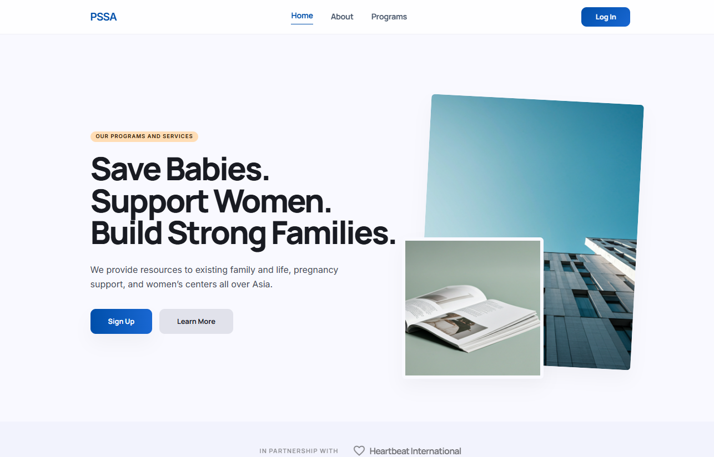
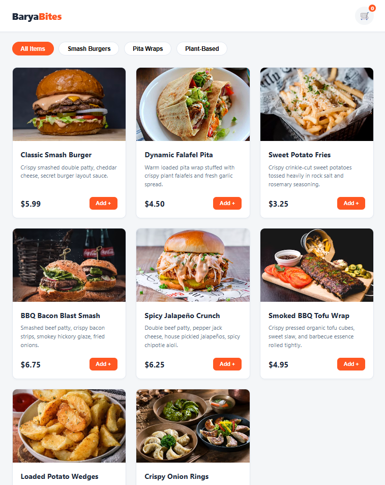
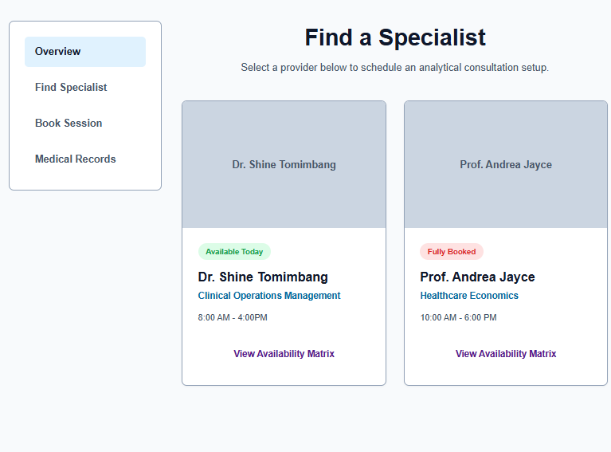
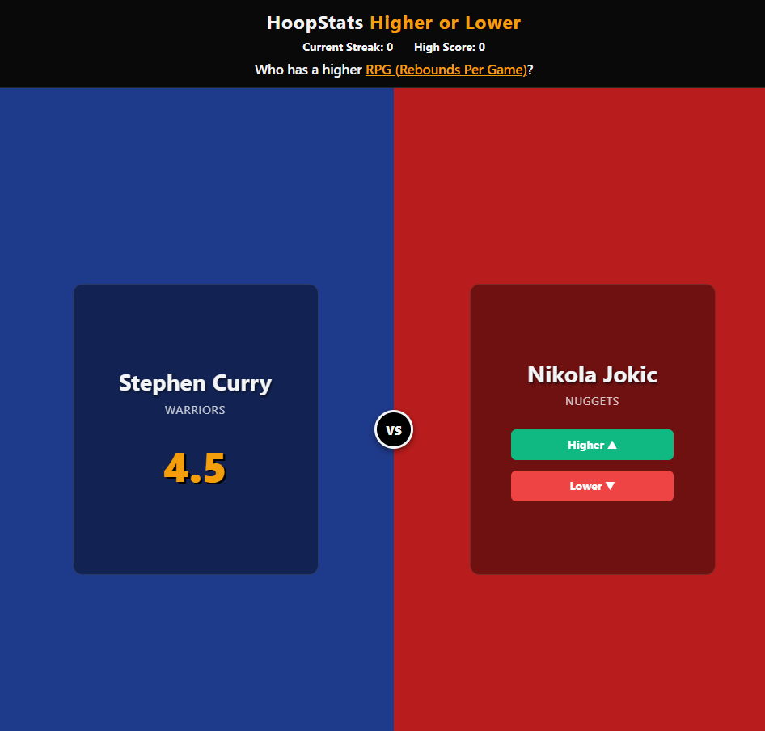

I am Shedrick
Your Virtual Assistant/Frontend Developerwho helps you build presence in social media
keep your audience engaged, and get you new reaches through web development.
I am Shedrick. A web developer who loves turning ideas into websites that actually say something. I focus on creating responsive, user-friendly, and accessible web applications.
Also building my social media management skills, so I can help with the full spectrum of digital presence strategies.
Web Developing is something I am passionate about and continuously strive to improve.
Currently enrolled at Adamson University, pursuing a degreee in Computer Science in my final year of the program while actively developing skills in web design and development.
Led the development of a website and appointment scheduling system for a non-government organization.
Creating clean, modern, and semantic HTML5 and CSS3 codebases.
Designing intuitive, user-friendly, and accessible interfaces.
Approaching challenges logically to find efficient resolutions.
Collaborating effectively with cross-functional team dynamics.
Thriving in fast-paced environments and eager to master new tech.
A curated snapshot gallery displaying structural screenshots and active architectural builds executed across diverse tech stacks.

A comprehensive tracking portal managing real-time inventory assets and live telemetry streams with interactive visual graph charts.
View Project
A comprehensive tracking portal managing real-time inventory assets and live telemetry streams with interactive visual graph charts.
View Project
An accessible lifestyle mobile interface allowing structural macro-tracking logs, built-in timer logic, and cross-device syncing profiles.
View Project
An encrypted workspace engine configured with Kanban tracking blocks, dynamic document editors, and seamless sub-tier invoice handling pipelines.
View ProjectFeel free to reach out to me through any of my platforms below!